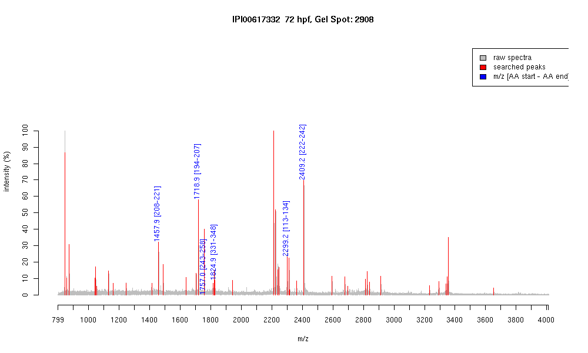

| Name | "PREDICTED: similar to tubulin, alpha 1isoform 2" |
|---|---|
| MW | 47619.3 |
| PI | 4.86 |
| Mascot Protein Score | 81 |
| Masses (matched / unmatched) | 6 / 50 |

| Peptide | MZ (calc) | MZ (observed) | Error (DA) | Error (PPM) | Start | Stop | Modifications |
|---|---|---|---|---|---|---|---|
| LIGQIVSSITASLR | 1457.8685 | 1457.8672 | -0.0013 | -1 | 208 | 221 | |
| NLDIERPTYTNLNR | 1718.8821 | 1718.8711 | -0.011 | -6 | 194 | 207 | |
| IHFPLATYAPVISAEK | 1756.9633 | 1756.953 | -0.0103 | -6 | 243 | 258 | |
| VGINYQPPTVVPGGDLAK | 1824.9854 | 1824.9211 | -0.0643 | -35 | 331 | 348 | |
| EIIDLVFGGGTGSGFTSLLMER | 2299.1638 | 2299.1768 | 0.013 | 6 | 113 | 134 | |
| FDGALNVDLTEFQTNLVPYPR | 2409.2085 | 2409.2122 | 0.0037 | 2 | 222 | 242 |